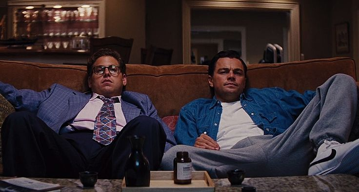

Voici une courte présentation de mes 2 films préférés :
Le Loup de Wall Street

Synopsis :
L’argent. Le pouvoir. Les femmes. La drogue. Les tentations étaient là, à portée de main, et
les autorités n’avaient aucune prise. Aux yeux de Jordan et de sa meute, la modestie était
devenue complètement inutile. Trop n’était jamais assez…
Batman : The Dark Knight

Synopsis :
Dans ce nouveau volet, Batman augmente les mises dans sa guerre contre le crime. Avec l'appui
du lieutenant de police Jim Gordon et du procureur de Gotham, Harvey Dent, Batman vise à
éradiquer le crime organisé qui pullule dans la ville. Leur association est très efficace mais
elle sera bientôt bouleversée par le chaos déclenché par un criminel extraordinaire que les
citoyens de Gotham connaissent sous le nom de Joker.